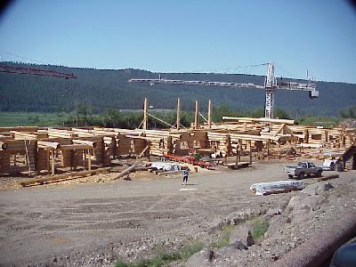
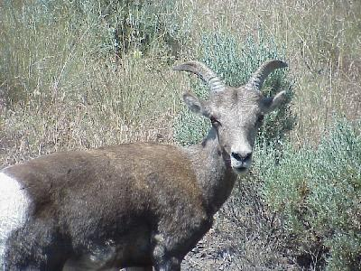
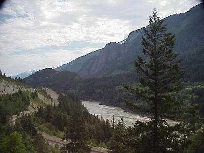
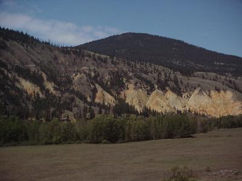
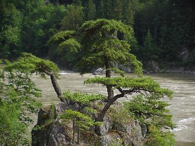
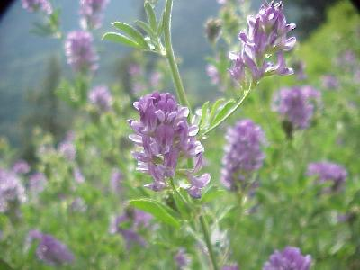

June 15, 8309 miles
| We started the day leaving camp at 8:20. The night started out a little hot, but quickly settled into a nice cool night with tons of stars out. | |
| For Sue: We stopped by to see a log lodge being pre-built. They build the lodge, doing all the log fitting at this site, then number the logs and reassemble them at the real site later. Everything you see here is one lodge, ... $1,000,000 (for the shell). |
 |
| For the miles we drove today, not may animals, but we did get a close look at some mountain goats - yes, my sister-in-laws, this is one of the goats we saw, not one we scanned in before the trip. |  |
The daily mountain pic., but notice the mountains are changing a lot. More trees on the mountains, and a drier type of vegetation. |
 |
| A good portion of today's miles went through the Fraser River valley. Along the valley there were some really great views, even if the land was a little on the dry side. |  |
| With how dry it was around the Fraser River Valley it
was amazing to find out that the Fraser River carries
twice the water as the Niagra River at the falls, and the
river valley itself is a lush green. This is just a rock, with a few trees, in the river valley. |
 |
| Ok, some nuts want to see pictures of the pretty weeds. These weeds were growing along the Fraser River. |  |
| We pulled into the campgrounds, just
outside Princeton, British Columbia, at 8:15 after
traveling 418 miles. We camped at the Brosley Rock
Provincial Park, as small park of some 18 or so camp
sites, but one that kept up with our the good experiences
at provincial parks. Wildlife for the day included: black tail deer (2); mountain goats (8). |
|